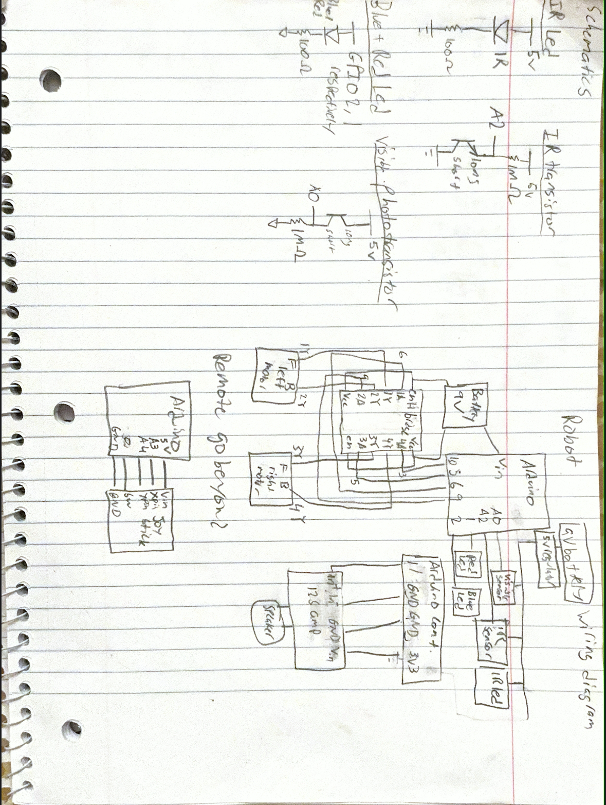
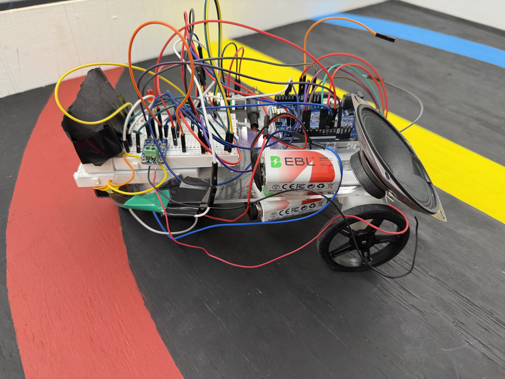
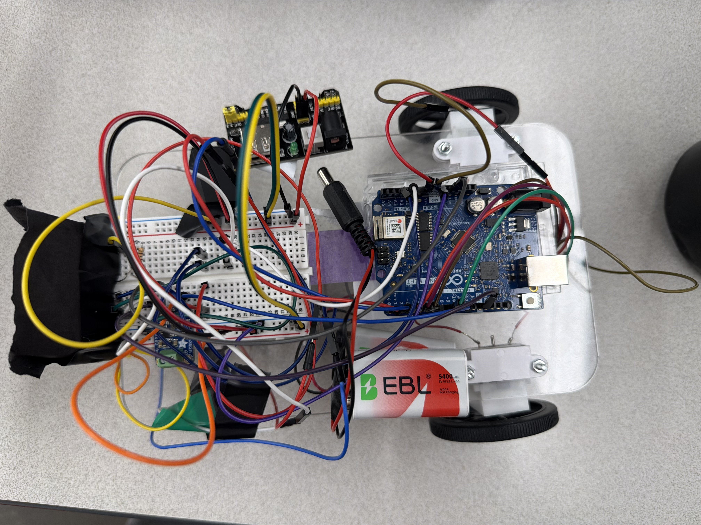
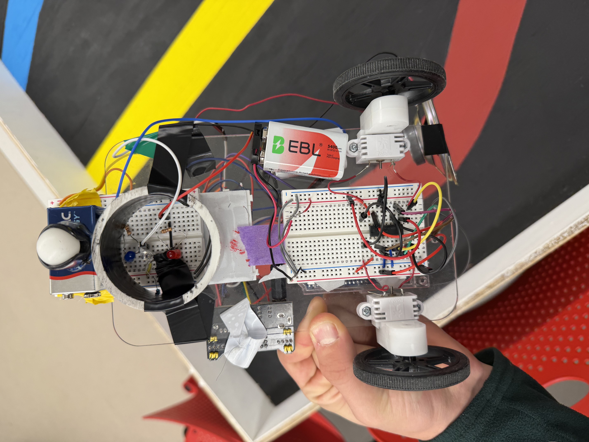

Autonomous Navigation Robot
Color-Following & Multi-Robot Coordination via WebSocket
Project Summary
Built an autonomous robot that navigates a colored track using custom color detection circuits, IR wall detection, and WebSocket-based communication for multi-robot coordination. The robot follows red, blue, and yellow lanes, detects walls to avoid collisions, and can coordinate with a second robot for joint navigation tasks, all controlled via a state machine with remote calibration capabilities.
Hardware Design
Controller & Drive
- Controller: Arduino Uno WiFi Rev2
- Motors: Two DC motors
- Motor Control: L293D H-bridge with PWM speed control
- Power: 9V battery (motors) + 5V regulated (logic)
Sensors
- Color Detection: Red/Blue LEDs + phototransistor
- Wall Detection: IR LED + IR phototransistor
- Light Shielding: Physical isolation from ambient light
- High-value resistors: Up to 1MΩ for sensitivity

Circuit schematics for color detection and IR sensing
Color Detection System
The color detection system uses LED emitters paired with a phototransistor to distinguish between red, blue, yellow, and black surfaces. By alternating which LED is on and measuring the reflected light, we can identify the surface color:
| Color | Red LED Reading | Blue LED Reading | Detection Logic |
|---|---|---|---|
| Blue | Low | High (>600) | Blue reflects blue light |
| Yellow | High (>580) | Medium | Yellow reflects red well (which was odd) |
| Red | Medium (>455) | Medium (>400) | Red reflects both moderately |
| Black | Low (<390) | Low (<410) | Black absorbs all light |
Moving Average Filter
To reduce noise in sensor readings, we implemented a 100-sample circular buffer for moving average filtering. This smooths out transient spikes and provides stable color detection even with varying ambient light conditions.
Navigation Modes
Solo Navigation
- Go forward until wall detected (IR)
- Turn 180°, find colored lane
- Follow lane until next wall
- Navigate to yellow lane
- Return to starting position
Joint Navigation
- Bot 1 starts, signals "AT_RED" via WebSocket
- Bot 2 waits for signal, then starts
- Bots follow their respective lanes
- Coordination via acknowledgment messages
- Both signal "HOME" when returned
State Machine
The robot operates using a state machine with the following states:
| State | Action | Trigger |
|---|---|---|
| 0 | Go Forward | Default movement |
| 1 | Go Backward | Wall detected, need to reverse |
| 2 | Turn Left | Navigation logic |
| 3 | Turn Right | Navigation logic |
| 4 | Stop | Wall detected or button press |
| 5 | Pivot Right | Fine turning adjustment |
| 6 | Pivot Left | Fine turning adjustment |
WebSocket Communication
Remote Calibration & Control
The robot connects to a WebSocket server for real-time control and calibration. Through the WebSocket interface, we can remotely adjust:
- IR_LIMIT: Wall detection threshold (0-1023)
- NAV_SPEED: Movement speed (0-255)
- NAV_TYPE: Navigation mode (solo/joint)
- PIVOT_DELAY: Turn timing calibration
Multi-robot coordination uses a simple message protocol:
B1:START- Bot 1 starting navigationB1:AT_RED- Bot 1 reached red laneB2:AT_BLUE- Bot 2 reached blue laneB1:ACK_AT_BLUE- Bot 1 acknowledges Bot 2's positionB1:HOME/B2:HOME- Bots returned to start
Final Robot

Side view showing laser-cut chassis and wheel assembly (and horn)

Top view showing Arduino, 5V voltage regulator and IR sensor layout

Bottom view showing color detection LEDs and H-bridge
Key Features
- Lane Recovery: If the robot loses the colored lane, it performs a search pattern (pivot left/right) to re-acquire the target color
- Battery Monitoring: Resistor-LED ladder for voltage sensing with calibration routines to adapt to changing battery levels
- Horn: I2S amplifier and speaker connected to PWM pin (340Hz tone)
- Team ID Filtering: WebSocket messages filtered by client ID to prevent interference from other teams
Go Beyond: Remote Control System
The Final Feature
Our Go Beyond was a WebSocket-based web app and remote control used to control the robot with a joystick. We hosted our local WebSocket server using Docker, which allowed us to control different robot states (solo demos, joint demos, and Go Beyond) and gave us the ability to debug without interfering with anyone else's server communication.
Remote Control Hardware
- Second Arduino connected to joystick
- ADC reads X and Y positions
- Sends directional commands to server
- Push joystick in to honk!
Web App Interface
- Connect to WebSocket server
- Send commands and view all messages
- Set robot into different modes
- Real-time calibration controls
We chose to create a remote control for our Go Beyond as a fun way to manually control our robot and test our web app/WebSocket integration skills. Instead of having the robot follow a track for the solo and joint demos, we were able to drive it around the room and interact with it through our interface.
Demo Videos
Joint Demo
Joint navigation following colored lanes
Go Beyond: Remote Control
Joystick control via WebSocket
The Team
This was a group project for EE31: Junior Design at Tufts University.
- Michael Chou
- Jonah Pflaster
- Daniel Jarka
- Paul Wang